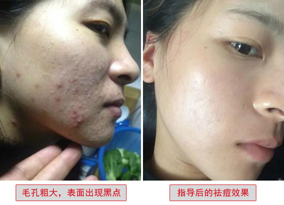
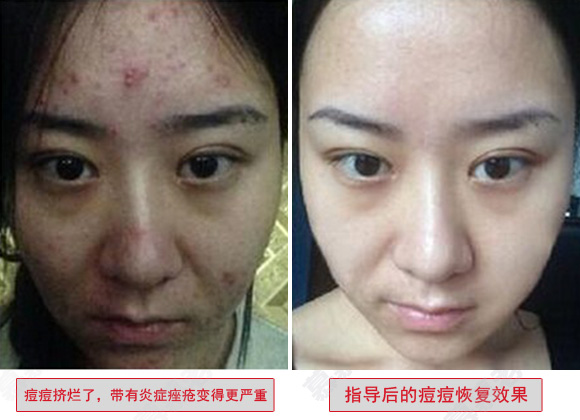
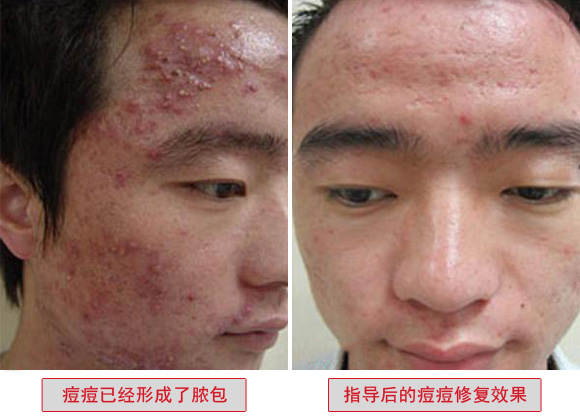
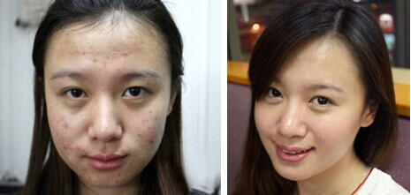
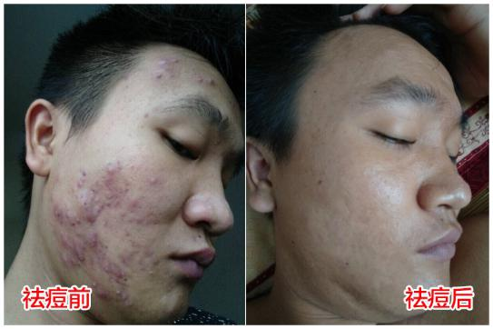
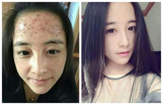
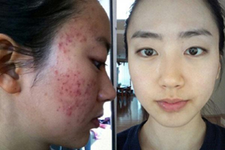

导读 在这个全民看脸的时代里，脸上有痘可是一件苦逼的事！因为长痘的肌肤就像一件残破不堪的衣服，怎么缝补都是补丁，而且越补越烂，直接影响着我们的学习、择业、爱情、家庭甚至命运。可就有这么一个人，她用自己独特的方法拯救了无数长痘的脸，现在，就让大家见识一下她的去痘独门绝招，让痘痘和痘印滚远点吧！
30年时间，中国医学科学院 北京协和医学院 皮肤病研究所的专家团深入研究面部肌肤护理，反复论证和实践后得出的宝贵配伍验方，让成千上万的痘痘患者摆脱了痘痘困扰！不求名利，只希望能帮到大家！
为了能为大家找到一种安全，有效，不伤肤的方法彻底解决痘痘问题，功夫不负有心人，多年来，中国医学科学院 北京协和医学院 皮肤病研究所的专家团反复论证和实践后终于找到了快速祛痘方案！
科普：毛孔堵塞是诱发痘痘的根本原因，所以要想根治痘痘，就必须保持毛孔的畅通。堵塞的毛孔，就好像是“堵车”，不去疏通道路，只会越堵越多。一旦毛孔堵塞，油脂与水分无法平衡时，就会造成内部缺水，这时如果只注重表面清除油光，没有真正解肌肤的的“渴”，想要彻底告别痘痘、清除油光是难以实现的，长久以往，就会造成皮肤“外油内干，痘痘横生”。
一千个人有一千种肌肤问题，好的祛痘方法从来都不是千篇一律，要根据每个人肤质、体质的不同，结合年龄、工作环境、生活习惯等因素，量肤定制祛痘方案，给予最适合的方式！
那么，要怎样才能真正彻底清除痘痘，恢复靓丽皮肤呢？下面将通过真实的祛痘案例分享如何祛痘才有效？修复痘痘要多长时间？希望能帮助大家快速解决痘痘，痘印问题。
什么样的痘痘要尽早祛掉
痘痘种类很多 其中有几种痘痘是比较严重的，一旦开始长这些痘痘，那脸就开始毁了，因为它对肌肤的破坏力极强，短时间内就可摧毁你的皮肤!
这种痘痘分为三度四级，三度分为轻度、中度、重度。四级分丘疹型，脓包型，囊肿型和片状囊肿型
苏小姐，痘痘长了两年反反复复，隔三差五就要挤掉出脓的痘痘。她说，用了很多护肤品也不行，有时脸一涂上护肤品就红，上妆也很小心。本想放弃，但又担心脸上的痘痘越来越严重变得满脸痘疤很粗糙。在跟我聊天时，苏小姐希望我能帮助她，不想这个问题影响她现在的工作和生活，连谈男朋友都感觉掉价。
 诊断报告：从苏小姐发来的照片来看，确诊为丘疹性痘痘，脸部皮损以炎性小丘疹为主，脓包不太多也不大，大部分都呈淡红色。这类痘痘不算很严重，但是有个问题，就是容易过敏，当痘痘长的不是很多时还不容易看出，长多了过敏就会导致脸红的明显。
张女士，2013年的时候生小孩后就长了很多囊肿型的痘痘，从此踏上了祛痘的不归路，试过刮痧、点穴、放血、按摩等手段，不仅痘痘毫无起色，脸色还变得蜡黄蜡黄的，痘痘长期不见好，整个人也是比较颓废，看不到希望。
 诊断报告：张女士是典型的囊肿脓包型痘痘，这种痘相比片状型囊肿脓包痘痘稍微不那么严重，但一样能演变成满脸片状，如果长期得不到有效地改善，对容貌会造成非常大的损害，会留下比较深的疤痕。
这类痘通常在长的时候皮肤会有很明显手压痛感，说明长在皮肤层下较深，一般是2至4天明显凸于皮肤表面。有些患者轻轻手挤是很难将脓挤出，就是因为囊肿痘痘长得比较深。如果用力过大，反复挤压，引起感染发炎，就很容易造成痘坑的形成。像这种痘不是轻易可以去除的，必须穿透力要强，能够迅速渗透到皮肤的真皮层。
小路今年25岁，痤疮长了差不多有6年，他跟我聊时，小伙子显得特别无奈、委屈，因为他女朋友的家人不同意他俩来往。他说，刚见女方家长时，女方母亲就问他为什么痘痘长成这样还不去看，并表示很反对他们继续交往。他不想因为满脸的痘痘耽误了自己的幸福，所以拜托我赶快帮他祛痘，搞定未来丈母娘！
 诊断报告：他发来的照片可以看出长痘的严重性已经很明显，像这种痘痘的根基在皮肤层不是很深，但是非常容易留痘印。长脓痘经常挤，这不能解决问题，感染后红印会很难去掉，随着长成的密度相对过密，还有很多小痘没起来。继续挤下去只会皮损更严重，一旦引起周边感染，创伤面积会持续加大，痘印就会比较多。
你现在看到这位小姐得的就是片状囊肿型痘痘，是为严重的一种痘。这种痘往往容易聚集融合发展成壁厚的结节。还有更糟糕的一种状况，就是损害破坏真皮层腺体，可以引起纤维性变及萎缩，导致皮损严重形成永久性痘坑。

为什么会有很多痤疮患者会愈来愈严重，主要是前期根本不重视问题，后期随随便便外用一些祛痘方法没好，就认为没方法，失去信心。有些自认为长痘属正常情况不用理，到了真正严重的时候才后悔莫及。
上面就是对痘痘的种类做了一个详细的讲解,相信大家对自己的痘痘已经有了新的认识。那这些痘痘到底要怎么样才能去掉呢?
我相信还有不少长痘的朋友像我的患者一样，把所有窍门都试了个遍，结果痘痘、痘印越来越密集，脸部红肿过敏，疼的睡觉都不敢碰枕头，真是得不偿失！
祛痘 要找对方法！ 找对方法！ 找对方法！很重要!
长按识别下方二维码
前100名咨询免费包邮送祛痘修护贴膜
99%的人肌肤都重获新生，你还在等什么？！
真人祛痘案例
女大学生祛痘后竟逆袭成“宋慧乔”，引帅哥狂搭讪，回头率高！
痘友档案：李雪莉，21岁，学生，河南安阳人
李雪莉高中就开始长闭合痘痘，去年考上大学来到相对湿热的厦门，皮脂分泌更旺，导致毛孔堵塞，排油不畅，结果痘痘越来越严重。试过好多祛痘方法，效果反反复复，都不太理想，自信心备受打击。今天5月份经室友王惠惠推荐找到我帮她祛痘，不出一个月痘痘去除逆袭成女神，现在皮肤干净白嫩锁住男人目光，每天都引帅哥狂搭讪！
江西小哥祛痘后变身花美男，颜值爆表！
痘友档案：刘志飞，27岁，出租车司机，江西九江人
志飞5年前开始长痘，未引起足够重视，用过芦荟胶、牙膏、生姜等所谓的小消痘，也试过排毒，痘痘非但不见好转反而愈发严重，大面积爆发后演变成囊肿痘痘，又硬又红肿伴有结节，非常的痛苦，消痘，痘痘男逆袭变成小鲜肉，颜值飙升，帅气十足！
长痘不分男女！一旦被痘痘霸占了脸，那就是噩梦的开始。你要知道，那恶毒的痘痘只要沾上你，就跟轰炸机一样在你肌肤上狂轰滥炸，留下坑坑洼洼，残破不堪。在这个颜值当道的社会，一定要舍得为你的脸投资！一张干净的脸，对于男人来说是面子，对于女人来说，就是你幸福的保障。
现在给自己一个尝试的机会，你也能成为别人羡慕的对象，祛痘不仅仅是祛痘，更是为了健康，自信和梦想。所以，赶紧行动起来吧，不要等别人都祛痘了，你还捂着脸在别人面前走！
长按识别下方二维码
前100名咨询免费包邮送祛痘修护贴膜
 点击添加秒变精致
点击添加秒变精致
精彩评论
我已经加了协和肌肤管理导师，刚才咨询了一下，感觉她说的很专业，人也很好，看她朋友圈好多案例，为我的祛痘之路增加不少信心！
试过好多方法都不管用，自从加了协和肌肤管理导师（微信： ）（长按复制微信号加好友），我脸上的痘痘居然消失了，皮肤也变光滑了，现在老公总爱抚摸着我的脸，说我更加漂亮有气质了呢！ 
以前长痘很辛苦，自己胡乱琢磨各种方法和方法用了一年痘痘才好，结果就留下了痘印痘坑，血的教训奉劝大家，不要自己乱来，有痘痘不要拖，不然像我留下痘坑就惨了。
长痘真的很悲催，走路的时候都不敢抬头，感觉大街上的人都在盯着自己脸上的痘，自卑的要死，搞得我到现在都不敢交男朋友，冬天的时候还能戴口罩，天气热了想遮都遮不住了，我也得赶紧去咨询协和肌肤管理导师（微信：）（长按复制微信号加好友）帮我祛痘了！
都说现在是个颜值当道的社会，一点都不假，自从祛痘后，平常不怎么理我的男同事都约我周末出去玩了呢！
结婚后脸上长了好多痘痘，老公嘴上不说，心里意见大得很，总说哪个女同事脸多干净皮肤多好，心塞塞，真害怕他有一天管不住下半身！
我关注协和肌肤管理导师好久了，看到你们祛痘后变得更漂亮了，我也有信心了呢！
为了祛痘没少折腾！花了多少冤枉钱，受了多少罪，唉！说多了都是泪。希望这次能有帮助，已经加上正在咨询。
已经用协和肌肤管理导师教我的办法一段时间了，现在痘痘明显消除红肿，突出的痘痘也慢慢平复了，期待到时候可以给男朋友一个大大的惊喜！ 
这几天一直坚持用老师建议的方法，看着痘痘不红了，也没再长新痘痘，真的太开心了，等痘痘完全好了我要给协和肌肤管理导师发红包谢谢她！
我真是深深感受到了别人说的祛痘等于整容是什么意思，祛痘后，爱情事业都超顺！像是开了挂一样！
我是个结了婚的人，青春期早就过了，可没想到痘痘还是找上我，后来认识了协和肌肤管理导师（微信： ）（长按复制微信号加好友），脸上的痘不但去掉了，皮肤还变得细嫩了，这是以前想都不敢想的啊!二货老公欣喜所狂，说像换了个媳妇！